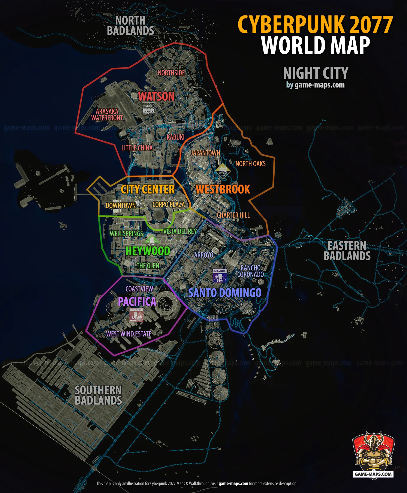

Night City by district — where the crew drinks, hides, and gets hunted.

The city, district by district.
The six districts and the Badlands around them, sub-district by sub-district — who holds what, and what it feels like on the street.